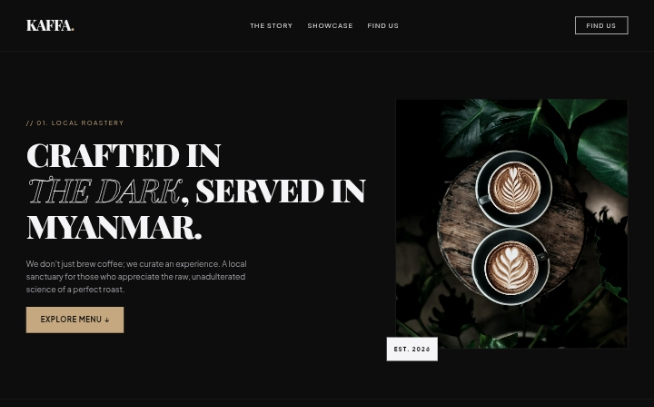
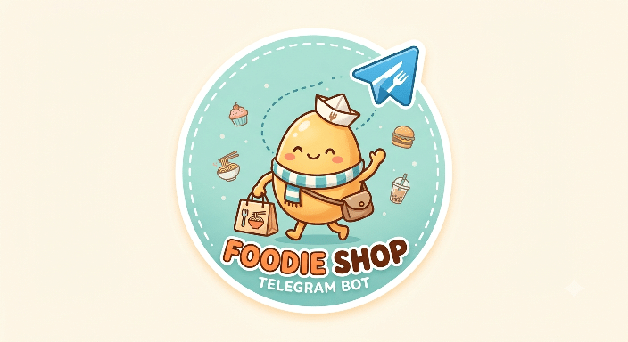

Hi, I am Zay Yan.
< Web Developer />
ကျွန်တော့်အကြောင်း
မင်္ဂလာပါ၊ ကျွန်တော်ကတော့ ပြည်တွင်းက စီးပွားရေးလုပ်ငန်းတွေ
အွန်လိုင်းပေါ်မှာ စနစ်တကျ ကျယ်ကျယ်ပြန့်ပြန့် ရပ်တည်နိုင်ဖို့
နည်းပညာဖြင့်ကူညီပေးနေသူ ဖြစ်ပါတယ်။ သင့်လုပ်ငန်းရဲ့
လုပ်ဆောင်ချက်တွေကို ပိုမိုအဆင်ပြေလွယ်ကူပြီး မြန်ဆန်လာစေဖို့အတွက်
လုပ်ငန်းသုံးစနစ်များပါဝင်သော
ဝက်ဘ်ဆိုက် (Website) များနှင့်
နည်းပညာပိုင်းဆိုင်ရာ ဝန်ဆောင်မှုများကို အကောင်းဆုံး
ပံ့ပိုးပေးနေပါတယ်။
ကျွန်တော့်အနေနဲ့ သင့်လုပ်ငန်းတကယ် အဆင်ပြေသွားစေဖို့ စေတနာနဲ့ တာဝန်ယူမှုကို အဓိကထားပါတယ်။ ဝန်ဆောင်မှုပြီးသွားရင်တောင် နည်းပညာပိုင်းဆိုင်ရာ အခက်အခဲမရှိစေဖို့ သေသေချာချာ ဆက်လက် ကူညီပေးသွားမှာ ဖြစ်လို့ သင့်လုပ်ငန်းအတွက် စိတ်အေးချမ်းသာစွာနဲ့ အလုပ်အပ်နှံနိုင်ပါတယ်။
ကျွန်တော့်ရဲ့ဝန်ဆောင်မှုများ
• Business Website တည်ဆောက်ခြင်း
သင့်လုပ်ငန်း သို့မဟုတ် ကုမ္ပဏီအကြောင်း၊ ရောင်းချနေသော ကုန်ပစ္စည်းများနှင့် ဝန်ဆောင်မှုများကို ကမ္ဘာ့ဘယ်နေရာကမဆို စနစ်တကျ ဝင်ရောက်ကြည့်ရှုနိုင်မည့် စမတ်ကျပြီး ယုံကြည်စိတ်ချရသော ဝက်ဘ်ဆိုက် (Website) များ ဖန်တီးပေးခြင်း။
• လုပ်ငန်းသုံး Web Application စနစ်များ
လုပ်ငန်းတွင်း စီမံခန့်ခွဲမှုများကို ပိုမိုမြန်ဆန် စနစ်ကျလာစေရန်အတွက် အရောင်းစာရင်း (POS) စနစ်၊ ရက်ချိန်းယူခြင်း (Booking) စနစ် နှင့် အွန်လိုင်းအရောင်းဆိုင် (E-commerce) ကဲ့သို့သော လုပ်ငန်းသုံး Website စနစ်များကို စိတ်တိုင်းကျ တည်ဆောက်ပေးခြင်း။
• Facebook & Telegram Bot အလိုအလျောက်စနစ် (Automation)
ဖောက်သည်များ လာရောက်မေးမြန်းသမျှကို လူကိုယ်တိုင် ထိုင်ဖြေစရာမလိုဘဲ ၂၄ နာရီပတ်လုံး ချက်ချင်း အလိုအလျောက် ပြန်လည်ဖြေကြားပေးခြင်း၊ အော်ဒါကောက်ပေးခြင်းနှင့် သတင်းအချက်အလက် ပေးပို့နိုင်ခြင်း၊ စသဖြင့် သင့်လုပ်ငန်းကို အချိန်ကုန်သက်သာစေမည့် Chatbot စနစ်များ တပ်ဆင်ပေးခြင်း နှင့် လုပ်ငန်းသုံး Chatbot အမျိုးမျိုးတည်ဆောက်ပေးခြင်း။
• စိတ်ကြိုက် (Custom) ဝက်ဘ်ဆိုက် များဖန်တီးပေးခြင်း
သင့်လုပ်ငန်းမှာ သီးသန့်လိုအပ်ချက်တွေ၊ ထူးခြားတဲ့ စိတ်ကူးအိုင်ဒီယာတွေ ရှိနေတယ်ဆိုရင် သင့်လုပ်ငန်းရဲ့ သဘောသဘာဝနှင့် လုံးဝကိုက်ညီမည့် Custom Website & Web App များကို သင့်စိတ်ကြိုက် ပုံစံအတိုင်း အစအဆုံး တည်ဆောက်ပေးပါတယ်။
• အခြားဝန်ဆောင်မှုများ
အထက်ဖော်ပြပါ ဝန်ဆောင်မှုများအပြင် သင့်လုပ်ငန်းအတွက် အခြားသော သီးခြားနည်းပညာပိုင်းဆိုင်ရာ ဝန်ဆောင်မှုများနှင့် စနစ်များ (Custom Requirements) လိုအပ်ပါကလည်း လွတ်လပ်စွာ ဆက်သွယ်စုံစမ်း တိုင်ပင်နိုင်ပါတယ်။ သင့်အိုင်ဒီယာကို တကယ့်လက်တွေ့ဖြစ်လာအောင် အတူတူ တိုင်ပင်ဆွေးနွေးပေးပြီး ကူညီပေးဖို့ အဆင်သင့်ရှိပါတယ်။
ကျွန်တော့်ရဲ့လက်ရာများ

မည်သည့် စီးပွားရေးလုပ်ငန်းအတွက် မဆိုအွန်လိုင်းပေါ်တွင် ပရော်ဖက်ရှင်နယ်ဆန်ဆန် မျက်နှာစာဖွင့်နိုင်ရန် စနစ်တကျ ဒီဇိုင်းထုတ်ထားသည့် လုပ်ငန်းပြ Branding Website ဖြစ်ပါတယ်။ လုပ်ငန်းရှင်များအတွက် မရှိမဖြစ်လိုအပ်သော လုပ်ငန်းမိတ်ဆက် (Story)၊ ထုတ်ကုန်နှင့် ဝန်ဆောင်မှုပြသခြင်း (Showcase) နှင့် ဆိုင်တည်နေရာ/ဆက်သွယ်ရန် (Find Us) စသည့် အဓိကကဏ္ဍများကို မျက်စိပသာဒလှပစွာ ကျစ်ကျစ်လစ်လစ် ခင်းကျင်းပြသပေးနိုင်မည့် စနစ်ဖြစ်ပါတယ်။
လက်တွေ့စမ်းသပ်ရန်လင့် - Coffee Shop

အွန်လိုင်းလုပ်ငန်းများအတွက် ဖောက်သည်များက Telegram ထဲမှာတင် မီနူးကြည့်နိုင်ခြင်း၊ သိလိုသည်များမေးမြန်းနိုင်ခြင်းနဲ့ အလိုအလျောက် အော်ဒါနှင့် လိပ်စာများ ကောက်ယူပေးမည့် ၂၄ နာရီပတ်လုံး အလုပ်လုပ်သော Chatbot စနစ်။
လက်တွေ့စမ်းသပ်ရန်လင့် - Foodie Shop Bot
ဆက်သွယ်ရန်
သင့်လုပ်ငန်းအတွက် စိတ်ကူးအိုင်ဒီယာရှိလို့ဖြစ်ဖြစ်၊
အလုပ်အပ်ချင်လို့ဖြစ်ဖြစ်၊ နည်းပညာပိုင်းဆိုင်ရာ
တိုင်ပင်ဆွေးနွေးချင်တာပဲဖြစ်ဖြစ် အောက်မှာပေးထားတဲ့ လိပ်စာများကနေ
အခမဲ့ဆက်သွယ်မေးမြန်းနိုင်ပါတယ်။
တတ်နိုင်သမျှအမြန်ဆုံး ပြန်လည်ဆက်သွယ်ပေးပါမယ်။